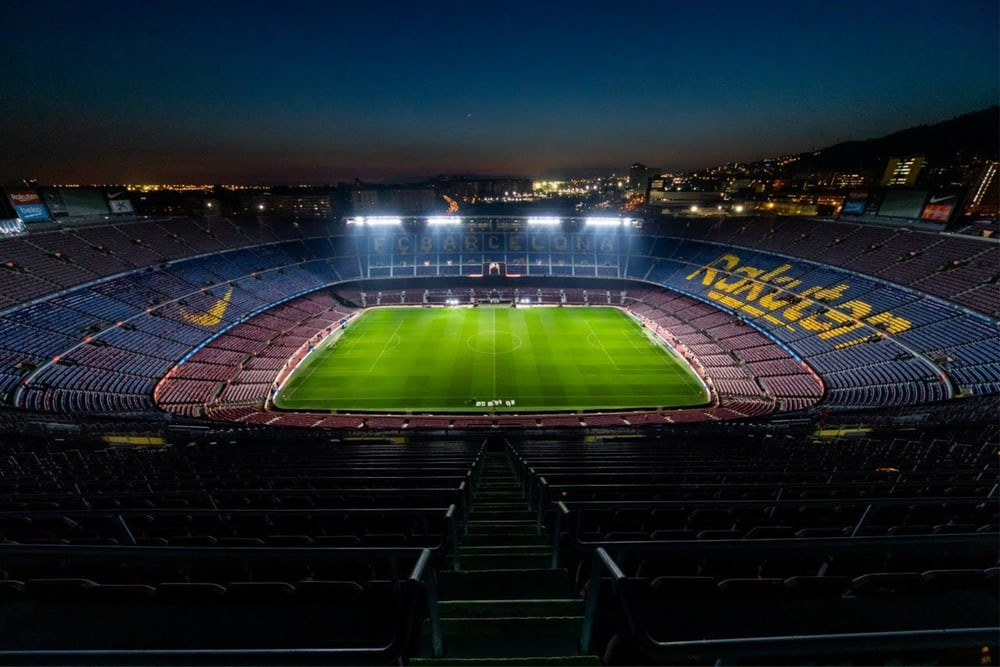
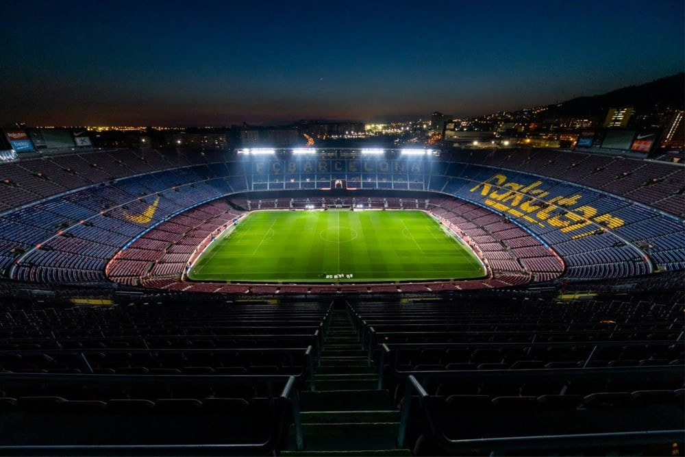

There is obviously a ton of prep that goes into making an event like this happen. So many things have to come together in the right way at the right time. But it’s definitely not impossible. And if you’re strategic about it, you can easily pull off something truly remarkable. The most important factors when creating a tournament, league or championship are: Location: Based on your research, land on an adequate location, it should be in a centralize area, so it is easily accessible to all parties involve and then make sure to visit it prior to the tournament. You will have to make sure that everything is functional. The grass should be cut and neat. The bleachers should be painted. There should be adequate changing rooms for the players. Scheduled: Make a schedule for the tournament to get an idea of the things you’ll need each day. This will help you decide the timings of each event, and it’ll help you incorporate any smaller events that you need to. All your other arrangements will be made based on your schedule. So, make sure to get this right. This is also the schedule that you will be making public to your teams and to fans. Making a schedule doesn’t have to be a hassle. Use V.I.P Sports special sports schedule templates to create your schedule and customize it according to your requirements. Personnel: You will need referees, concession stand operators, security, cleaning crew, and people to help during game transitions. Ask other local organizers for rates they pay or go online for a pay range. Consider asking for volunteers to referee, clean up, or work the concession stand. You may be able to

 
